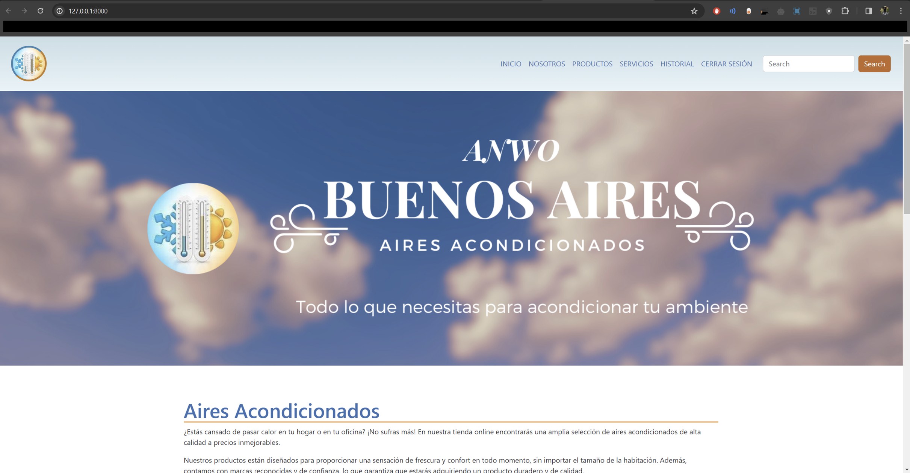
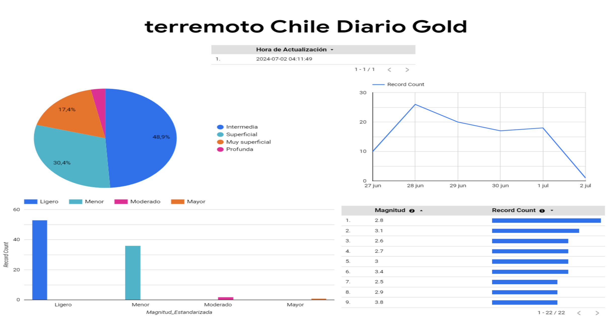
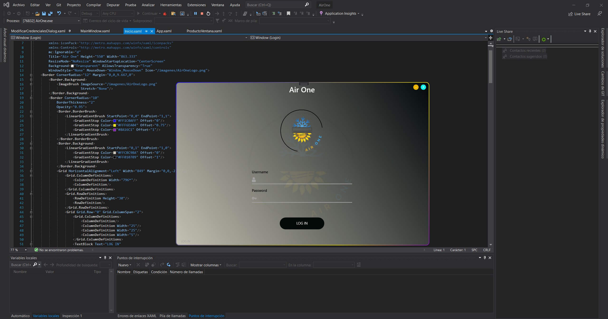
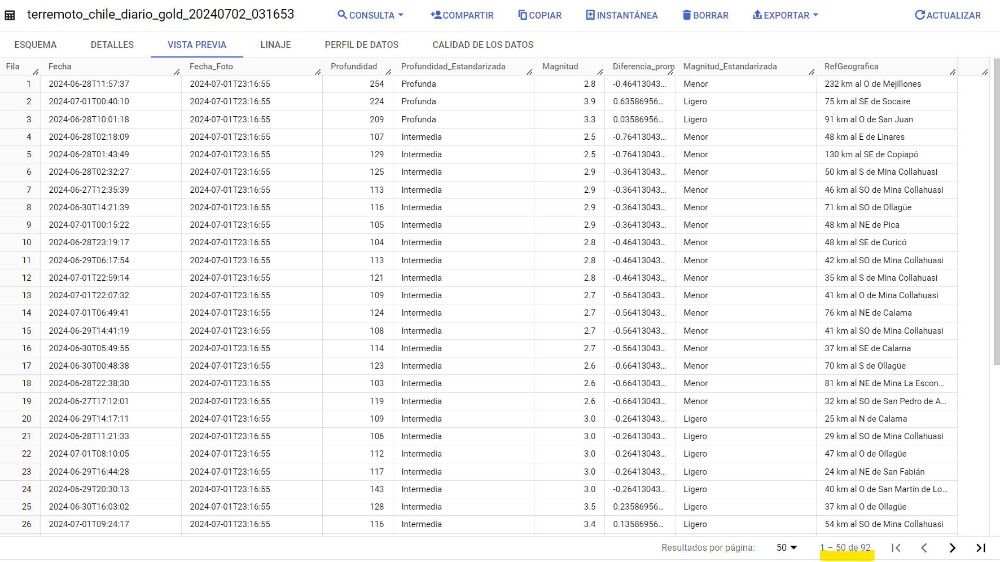

-
Proyecto Air One

-
Registra APP

-
Google Cloud Platform - Sismos Chile



 PYTHON
90%
PYTHON
90%
 C#
80%
C#
80%
 JavaScript
50%
JavaScript
50%
 SQL
80%
SQL
80%
 Bootstrap
90%
Bootstrap
90%
Este proyecto se ha desarrollado como parte de la asignatura "Integración de Plataformas", utilizando el framework Django para la creación de una solución web que aborda una problemática específica: el desarrollo e integración de un sitio web.
Se logró una integración efectiva a través de una API con un software de escritorio basado en Windows Presentation Foundation (WPF). Además, se implementaron integraciones con servicios externos, tales como:

Este proyecto, diseñado para la asignatura de Desarrollo Móvil, se basa en un sistema integrado creado con Django para la versión web, utilizando la API de Django Rest Framework, e Ionic para la interfaz móvil. Su funcionalidad principal está enfocada en facilitar la gestión académica para profesores y alumnos.
Para los docentes: El sistema ofrece un conjunto de herramientas que incluye:
Para los alumnos: La aplicación móvil permite:
Este sistema está diseñado para optimizar la comunicación y el seguimiento académico dentro del entorno educativo, proporcionando herramientas eficientes tanto para profesores como para alumnos.

En este proyecto, se implementó un flujo de trabajo integral para gestionar, transformar y analizar datos sísmicos utilizando Google Cloud Platform. El proceso se desarrolló en varias etapas clave:
Ingesta y Almacenamiento: Se crearon buckets en Google Cloud Storage y se configuró BigQuery para almacenar los datos sísmicos. Esto garantizó un almacenamiento seguro y accesible para el análisis posterior.
Transformación de Datos: Se utilizaron herramientas como Dataprep para transformar los datos en tres fases:
Automatización y Validación: Se emplearon Cloud Functions y Cloud Scheduler para automatizar la actualización de datos en BigQuery. La validación del esquema y la generación de perfiles de datos aseguraron que cualquier cambio en la estructura de los datos fuera detectado y gestionado adecuadamente.
Análisis y Visualización: Los datos transformados se visualizaron en Looker Studio, donde se crearon gráficos y tablas para interpretar patrones sísmicos de manera clara y rápida. Esto facilitó la identificación de tendencias y anomalías.
El uso de estas herramientas permitió una gestión eficiente y escalable de grandes volúmenes de datos sísmicos, estableciendo una base sólida para análisis futuros y mostrando el potencial de Google Cloud Platform para el manejo avanzado de datos complejos.
